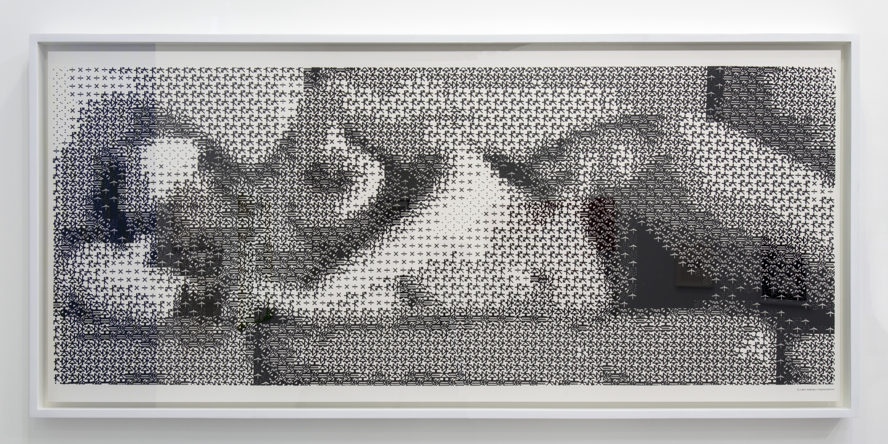
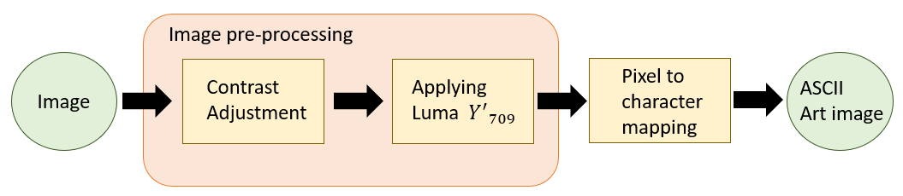

Imaging & Videochevron_right
Renderingchevron_right
Algovischevron_right
Computer Graphicschevron_right
HCIchevron_right
ASCII art is a graphic design technique that uses computer characters for presentation and consists of pictures pieced together from some printable characters defined by the ASCII Standard.
Create an image composed solely of ASCII characters that looks like the original image.
Among the oldest known examples of ASCII art are the creations by computer-art pioneer Kenneth Knowlton from around 1966, who was working for Bell Labs at the time. "Studies in Perception I" by Ken Knowlton and Leon Harmon from 1966 shows some examples of their early ASCII art.

Computer Nude (Studies in Perception I) is the most widely circulated early artwork made using a computer. It demonstrates the unique capacity of the viewer's brain to interpret a composition of abstract symbols grouped to emulate areas of tonal value as a human figure. Leon Harmon, a researcher in cognitive neuroscience, and Ken Knowlton, a computer engineer at AT&T’s Bell Labs, reenvisioned a photograph of dancer Deborah Hay as a bitmap mosaic using a program they developed.
ASCII art was invented very early on because early printers often lacked graphics ability and thus characters were used in place of graphic marks. Other common uses were marking divisions between different print jobs from different users, and large banners.
One of the (first) things to do when developing software is to devise which are the steps the program should take in order to achieve the desired outcome. To make ASCII art, each pixel or region of pixels from the original image must be mapped to a certain character. First, the image is converted to grayscale and then the program chooses a pixel that has a similar grayness. For example, a very dark pixel can be mapped to the character '#' or '$' which are dark, whereas a white pixel can become a dot '.' or a blanck space ' '.
It is better to use a method that preserves the luminance of the original image in the grayscale image. This is the purpose of the luma weighted sum where each pixel’s intensity or grey value is simply the weighted sum of the values of its RGB components computed as follows:
Another good thing to do before applying luma is increasing the contrast of the image. That way the color range of the image increases and more characters get selected. This creates a nicer and sharper image.
In short, the image passed trough a high contrast filter, then the luma weighted sum is applyed and finally the image gets mapped pixel by pixel to a character of similar brightness.

This program is written in javascrip and uses a very powerfull drawing library called p5.js.
The contrast of an image is the difference between the maximum and minimum pixel intensity, the “amount” of separation between its darkest and brightest areas. It is then determined by the colour and brightness of the different objects or shapes that appear in the image. This means that the higher the contrast, the bigger the difference between pixel intensities, and the easier it will be to recognize the different objects in the image (due to this bigger range of intensities). The code was based on Cassie's implementation.
The function takes an image and applies the luma_Y inline function to every pixel of the image. After that, it returns the luma brightness index per pixel. The funtion also returns the maximum (white pixel) and minimum (black pixel) possible values of brightness. These values are going to be used in the next step to map grayscale values to ASCII characters.
After these two steps we get a proper grayscale image. In the next canvas (created in p5.js) you can see the result of these two steps. The image on the left is the original, the center image is after the contrast filter, and the one on the right is the final image after luma weighted sum applyed.
As previously said, each character must be given a certain brightness index. This index must be high for characters like '#' or '@' and should be low for a dot '.' or a space ' '. This can be challenging as ASCII characters have no intrinsic grayness, because this only depends on how they are drawn on your screen - in what font, size, and horizontal and vertical spacing, and in what colors. This post describes some ways to solve this problem, such as counting every colored pixel and selecting a monospace font.
This programs uses the list given by Paul Bourke in Character representation of grey scale images. The "Standard" character ramp for grey scale pictures, black -> white.
"$@B%8&WM#*oahkbdpqwmZO0QLCJUYXzcvunxrjft/|()1{}[]?-_+~<>i!lI;:,"^`'. "
The code to transform the image is very easy. The program passes trough every grayscale value and maps the position of a character in the list. Please note how the maximum and minimum are used.
See the final result on the canvas.
1link/**
2link* Function based on https://editor.p5js.org/cassie/sketches/SB4pBjns0
3link*
4link* @param {*} img image to be processed. Function changes the same reference to image
5link* @param {*} contrast 0 to 100
6link*/
7linkfunction applyContrast(img, contrast) {
8link img.loadPixels();
9link for (let x = 0; x < img.width; x +=1) {
10link for (let y = 0; y < img.height; y +=1) {
11link let c = img.get(x,y);
12link let factor = (259 * (contrast + 255)) / (255 * (259 - contrast));
13link let nR = constrain(factor*(red(c)-128) + 128, 0, 255);
14link let nG = constrain(factor*(green(c)-128) + 128, 0, 255);
15link let nB = constrain(factor*(blue(c)-128) + 128, 0, 255);
16link let nC = color(nR,nG,nB);
17link img.set(x,y,nC);
18link }
19link }
20link img.updatePixels();
21link}
22link/**
23link* Applies luma to every pixel of given image
24link* @param {*} img : image to be processed. Function changes the same reference to image
25link* @returns
26link*/
27linkfunction applyLuma (img){
28link let lumaMatrix = []; // Stores luma values in matrix : [[row1], [row2], ..., [rowN]]
29link
30link let luma_Y = (pixel) => 0.2126 * red(pixel) + 0.7152 * green(pixel) + 0.0722 * blue(pixel);
31link img.loadPixels();
32link for (let j = 0; j < img.height; j++) {
33link let row = [] // Single row of the matrix
34link for (let i = 0; i < img.width; i++) {
35link row.push(luma_Y(img.get(i, j))); // Apply luma to every pixel in image
36link }
37link lumaMatrix.push(row);
38link }
39link return {
40link values: lumaMatrix ,
41link minValue: luma_Y(color(0, 0, 0)), // Used for mapPixelToASCII
42link maxValue: luma_Y(color(255, 255, 255)) // Used in mapPixelToASCII
43link }
44link}
45link/**
46link* Maps value of every pixel to an ascii character
47link* @param {*} imgProcessOutput Dictionary of processed image. Must have keywords .values .maxValue and .minValue
48link* @returns Char[][] Matrix of characters
49link*/
50linkfunction mapPixelToASCII(imgProcessOutput) {
51link // ASCII order taken from http://paulbourke.net/dataformats/asciiart/
52link let characters = "$@B%8&WM#*oahkbdpqwmZO0QLCJUYXzcvunxrjft/\|()1{}[]?-_+~<>i!lI;:,\"^`'. ";
53link
54link let minValue = imgProcessOutput.minValue;
55link let maxValue = imgProcessOutput.maxValue;
56link return imgProcessOutput.values.map((row) => {
57link return row.map((value) => {
58link let position = Math.round(map(value, minValue, maxValue, 0, characters.length - 1));
59link return characters[position];
60link })
61link })
62link}
63link
64linklet img_original;
65link
66linkfunction preload() {
67link let location = '../sketches/workshop1/w3/lenna.png';
68link img_original = loadImage(location);
69link}
70link
71linkfunction setup() {
72link createCanvas(700, 800);
73link img_original.resize(150, 150);
74link
75link imgProcessOutput = imagePreprocessing(img_original, contrast=100); // applies contrast and luma to image. Changes img_transformed by reference
76link let ascii_image = mapPixelToASCII(imgProcessOutput); // takes every luma value and assings an ascci character according to brighness
77link printCharacters(ascii_image, 5, 0, size=5); // Prints all characters every 'size' px apart
78link}
79link
80linkfunction imagePreprocessing (img, contrast){
81link applyContrast(img, contrast);
82link return applyLuma(img);
83link}
84link
85linkfunction applyLuma (img){
86link let lumaMatrix = []; // Stores luma values in matrix : [[row1], [row2], ..., [rowN]]
87link
88link let luma_Y = (pixel) => 0.2126 * red(pixel) + 0.7152 * green(pixel) + 0.0722 * blue(pixel);
89link img.loadPixels();
90link for (let j = 0; j < img.height; j++) {
91link let row = [] // Single row of the matrix
92link for (let i = 0; i < img.width; i++) {
93link row.push(luma_Y(img.get(i, j))); // Apply luma to every pixel in image
94link }
95link lumaMatrix.push(row);
96link }
97link return {
98link values: lumaMatrix ,
99link minValue: luma_Y(color(0, 0, 0)), // Used for mapPixelToASCII
100link maxValue: luma_Y(color(255, 255, 255)) // Used in mapPixelToASCII
101link }
102link}
103link
104linkfunction applyContrast(img, contrast) {
105link img.loadPixels();
106link for (let x = 0; x < img.width; x +=1) {
107link for (let y = 0; y < img.height; y +=1) {
108link let c = img.get(x,y);
109link let factor = (259 * (contrast + 255)) / (255 * (259 - contrast));
110link let nR = constrain(factor*(red(c)-128) + 128, 0, 255);
111link let nG = constrain(factor*(green(c)-128) + 128, 0, 255);
112link let nB = constrain(factor*(blue(c)-128) + 128, 0, 255);
113link let nC = color(nR,nG,nB);
114link img.set(x,y,nC);
115link }
116link }
117link img.updatePixels();
118link}
119link
120linkfunction printCharacters(ascii_image, x_start, y_start, size) {
121link let h = ascii_image.length;
122link let w = ascii_image[0].length;
123link textFont('Courier New');
124link textSize(size);
125link for (let i = 0; i < h; i++){
126link for (let j = 0; j < w; j++){
127link let x = x_start + size * j;
128link let y = y_start + size * i;
129link text(ascii_image[i][j], x, y)
130link }
131link }
132link}
133link
134linkfunction mapPixelToASCII(imgProcessOutput) {
135link // ASCII order taken from http://paulbourke.net/dataformats/asciiart/
136link let characters = "$@B%8&WM#*oahkbdpqwmZO0QLCJUYXzcvunxrjft/\|()1{}[]?-_+~<>i!lI;:,\"^`'. ";
137link
138link let minValue = imgProcessOutput.minValue;
139link let maxValue = imgProcessOutput.maxValue;
140link return imgProcessOutput.values.map((row) => {
141link return row.map((value) => {
142link let position = Math.round(map(value, minValue, maxValue, 0, characters.length - 1));
143link return characters[position];
144link })
145link })
146link}
147link